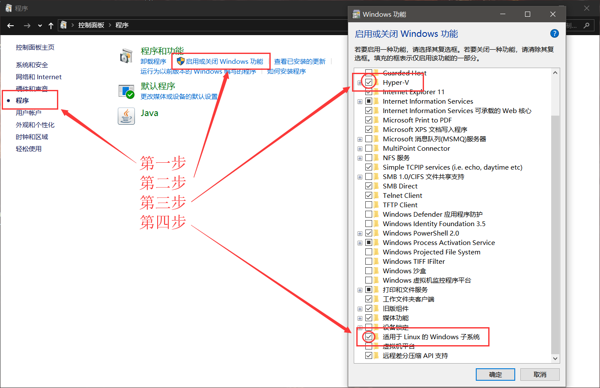
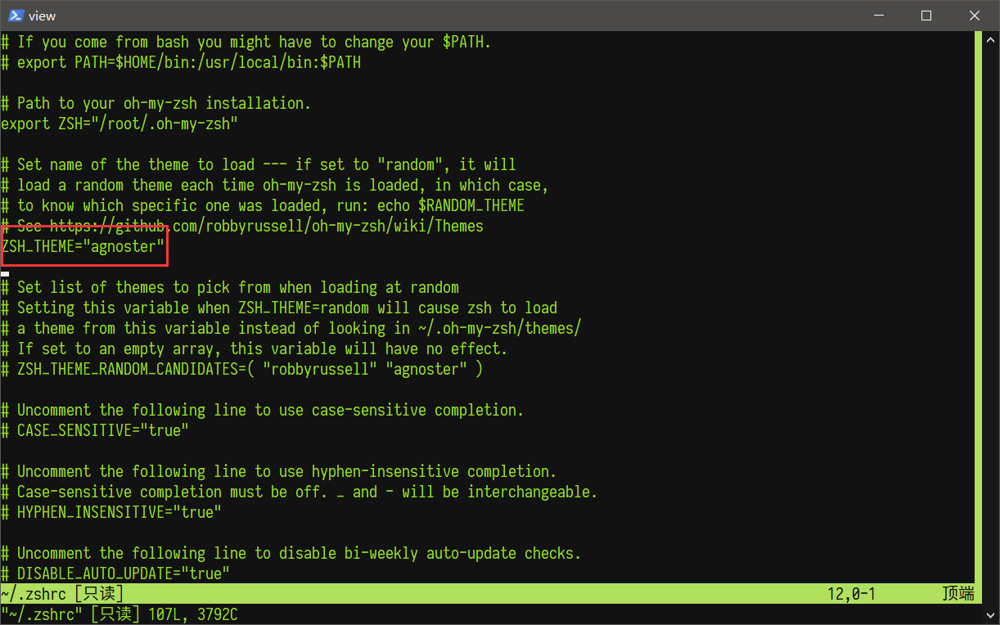
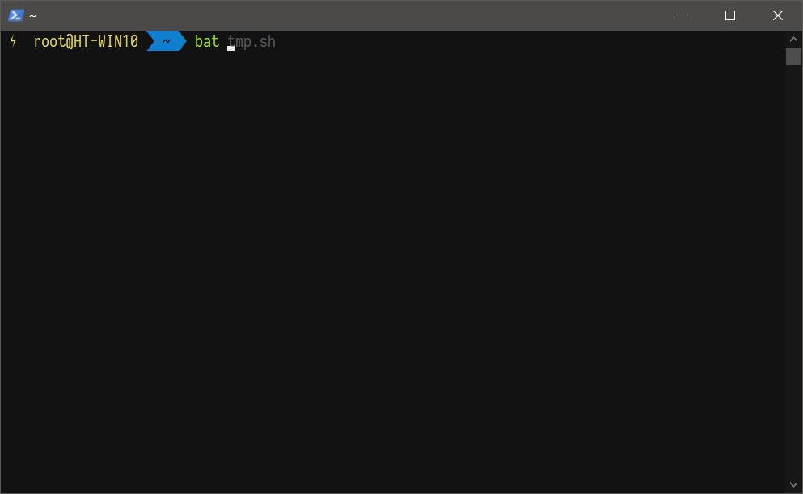
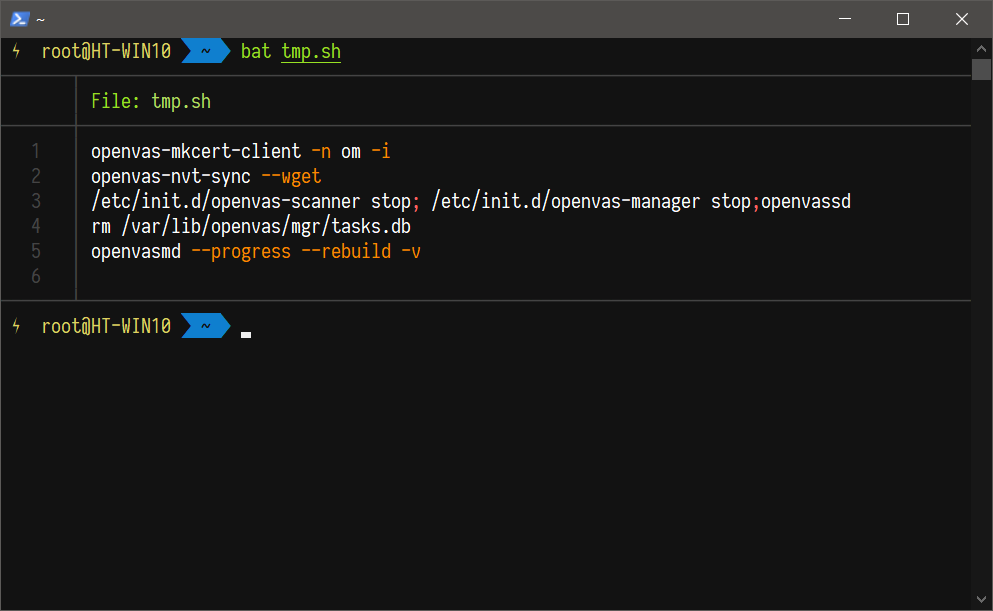
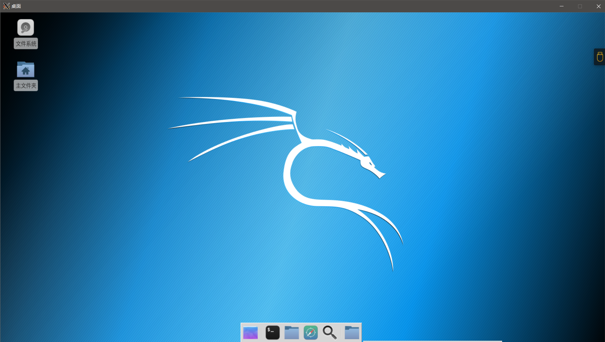

WSL 下的 kali
本文为 Windows Subsystem for Linux 下 Kali 的安装与相关配置
对于有经验的读者, 可以直接跳过背景介绍
背景介绍
WSL 是个啥
适用于 Linux 的 Windows 子系统（英语：Windows Subsystem for Linux，简称 WSL）是一个为在 Windows 10 和 Windows Server 2019 上能够原生运行 Linux 二进制可执行文件（ELF 格式）的兼容层
WSL 提供了一个由微软开发的 Linux 兼容的内核接口（不包含 Linux 内核代码），然后可以在其上运行 GNU 用户空间，例如 Ubuntu，openSUSE，SUSE Linux Enterprise Server，Debian 和 Kali Linux。这样的用户空间可能包含 Bash shell 和命令语言，使用本机 GNU/Linux 命令行工具（sed，awk 等），编程语言解释器（Ruby，Python 等），甚至是图形应用程序（使用主机端的 X 窗口系统）
Kali 是个啥
Kali Linux 是基于 Debian 的 Linux 发行版，设计用于数字鉴识和渗透测试。由 Offensive Security Ltd 维护和资助
Kali Linux 既有 32 位又有 64 位的映像。可用于 x86 指令集的中央处理器。同时还有基于 ARM 架构的映像，可用于树莓派和三星的 ARM Chromebook
Kali Linux 拥有超过 600 个预装的渗透测试程序，包括 Armitage(一个图形化网络攻击管理工具， Nmap(一个端口和服务扫描工具), Wireshark, John the Ripper password cracker, Aircrack-ng, Burp Suite 和 OWASP ZAP 网络应用程序安全扫描器
最先由 Offensive Security 的 Mati Aharoni 和 Devon Kearns 通过重写 BackTrack 来完成，BackTrack 是他们之前写的用于取证的 Linux 发行版
Kali Linux 是创建在安全的环境中，只有可信的人才可以提交安装包，并且每一个包都含有开发者的数字签名。kali 还有一个为 802.11 无线注入打补丁的定制内核。这主要是因为开发团队发现他们需要进行大量的无线评估
Kali Linux 包含许多的安全工具，比如：
- Aircrack-ng
- Burp suite
- Cisco Global Exploiter, a hacking tool used to find and exploit vulnerabilities in Cisco Network systems
- Ettercap
- John the Ripper
- Kismet
- Maltego
- Metasploit framework
- Nmap
- OWASP ZAP
- Social engineering tools
- Wireshark
- Hydra
- Reverse Engineering tools
- Forensics tools like Binwalk, Foremost, Volatility e.t.c
安装
现在的获取方式算非常简单了, 不像以前还需要利用 docker 去获取, 以前的方式可以参见 这里
现在安装可以通过 Microsoft Store 直接安装
- 升级 Windows, 至少 Windows 10 版本 16215.0
- 启用 Hyper-V 和, 先打开控制面板, 而后如下图操作
 - 在 Microsoft Store 中搜索 Kali, 点击安装即可
- 安装后先别急着启动, 要不然就需要创建一个非 root 用户, 此时应该先在命令行中运行:
kali config --default-user root - 启动 Kali(PS: 命令行中直接输入 kali 后敲回车就可以运行了), 而后修改密码: 在 Kali 终端中运行
passwd
至此, WSL 下的 Kali 安装完毕
配置
安装完整版
由于 WSL 是阉割版, 所以我们需要安装完整版
修改源
官方源速度慢, 所以需要换源
1 | vi /etc/apt/sources.list |
将官方的源给注释掉, 而后添加清华的源, 如下
1 | # 官方 |
注意, 由于笔者是校园网, 所以使用速度快且不算流量的IPv6, 如果不考虑这个的话, 将上述中的
mirrors6换成mirrors即可
依次运行以下命令
1 | apt-get update |
等待直至结束即可
配置终端
安装 zsh
1 | apt-get install zsh # 安装 zsh |
此时重启终端即可看到效果(如果是远程连接, 则断开后重新连接一下)
配置主题
1 | vi ~/.zshrc |
将图中的位置更改为自己想要的主题即可
可以在这里预览相应的主题

安装插件
autojump
官网
作用: 使用
autojump的缩写j,cd命令进入~/user/github/Youthink文件夹，下一次再想进入Yourhink文件夹的时候,直接j youthink, 或者只输入youthink的一部分youth都行安装
1
2git clone git://github.com/joelthelion/autojump.git
python autojump/install.py最后将以下加入到
~/.zshrc中1
[[ -s ~/.autojump/etc/profile.d/autojump.sh ]] && . ~/.autojump/etc/profile.d/autojump.sh
zsh-syntax-highlighting
官网
作用: 语法检查
安装
1
git clone https://github.com/zsh-users/zsh-syntax-highlighting.git ${ZSH_CUSTOM:-~/.oh-my-zsh/custom}/plugins/zsh-syntax-highlighting
然后在
~/.zshrc中配置1
plugins=(其他的插件 zsh-syntax-highlighting)
最后执行
1
source ~/.zshrc
zsh-autosuggestions

官网
作用: 补全, 按→即可, 也可以自定义补全快捷键, 如要添加
,, 则在~/.zshrc中添加1
bindkey ',' autosuggest-accept
即可
安装
1
git clone git://github.com/zsh-users/zsh-autosuggestions $ZSH_CUSTOM/plugins/zsh-autosuggestions
然后在
~/.zshrc中配置1
plugins=(其他的插件 zsh-syntax-highlighting)
最后执行
1
source ~/.zshrc
bat

官网
作用: 与
cat相同, 只是会添加行号和语法高亮安装
1
2wget https://github.com/sharkdp/bat/releases/download/v0.11.0/bat_0.11.0_amd64.deb
dpkg -i bat_0.11.0_amd64.deb
安装图形界面
方法一
此方法我没有实现
视频在这里
- 新建脚本并运行
1 |
|
由于原脚本在国外, 获取速度相当慢, 就把它留在下面了
原本的脚本可以用以下命令获取
1 | wget https://kali.sh/xfce4.sh |
- 启动 xfce4 服务
1 | /etc/init.d/xrdp start |
方法二
已实现

安装 xfce4 和中文支持
1
apt-get install xfce4 fonts-noto-cjk
Windows 上安装 VcXsrv
见这里配置输出
在~/.zshrc(如果用的是bash就用~/.bashrc) 中添加1
export DISPLAY=:0.0
启动桌面
1
startxfce4
启动后遇到问题, 可以用以下脚本解决
1
2rm -rf ~/.config/xfce4
rm -rf ~/.cache/sessions
配置 Vim
1 | git clone https://github.com/tomasr/molokai |
到此为止